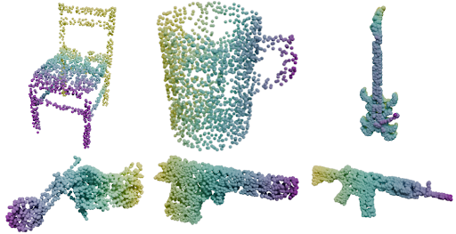
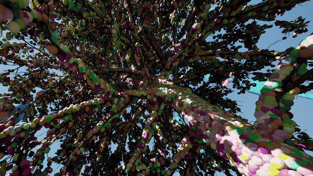
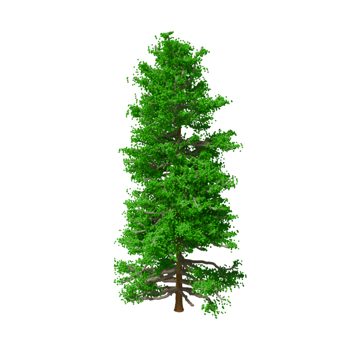

Gunner Stone
Applied Scientist · Machine Learning Engineer
Applied Scientist & ML Engineer
I specialize in 3D point cloud understanding, deep learning, and remote sensing. My academic work focused on LiDAR-based forest ecology — mapping biomass, carbon stocks, and biodiversity to model the effects of wildfires and climate change on forest ecosystems.
I hold a PhD in Computer Science & Engineering from the University of Nevada, Reno, with publications spanning IEEE ICIP, ACM PEARC, ISVC, Machine Vision & Applications, and AGU — covering topics from transformer pretraining and diffusion models to large-scale LiDAR simulation.
🎓 PhD · MS · BS — Computer Science & Engineering, UNR13
Publications
88+
Citations
6
Venues
Recent Publications
Selected peer-reviewed work in 3D point cloud understanding, deep learning, and forest ecology.

Point-RTD: Replaced Token Denoising for Pretraining Transformer Models on Point Clouds
A new method for teaching AI to better understand 3D data through replaced token denoising, leading to stronger performance in object recognition and scene understanding.
Read Paper →
LiDAR Toolkit: Scalable LiDAR Simulation in Unreal Engine 5
A free, open-source UE5 plugin for generating realistic point cloud LiDAR scans, bridging the gap between synthetic and real-world data.
Read Paper →
Generating Synthetic Tree Point Clouds for Deep Learning
Evaluating synthetic tree point cloud creation for part-segmentation tasks, comparing five well-known models on trunk, branch, and leaf classification.
Read Paper →